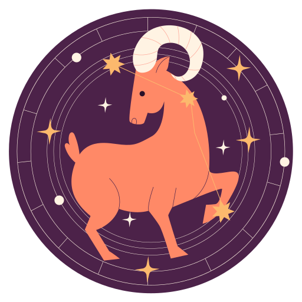

- 


Tyle przeszłaś przez ostatnie dwa lata, ale możesz być pewna, że nie na darmo. Co znajduje się na Twojej liście rzeczy do zrobienia na 2022 rok? Czas zbudować swoją własną markę i ulepszyć tożsamość zawodową. Kurtyna losu za chwilę się podniesie, a ty znajdziesz się na samym środku sceny. Twój wkład nie pozostanie niezauważony. Nareszcie dostrzeżesz rezultaty ciężkiej pracy. Jowisz w Rybach oświetli trzeci dom Koziorożca związany z komunikacją, przynosząc obfitość, ekspansję i wzrost do twojego obszaru kariery. Spodziewaj się również krótkich wycieczek oraz nawiązania cennych znajomości. Zaćmienia 2022 wezwą cię do zaopiekowania się swoim wewnętrznym dzieckiem. Nadchodzą znaczące zmiany, jeśli chodzi o twoje życie miłosne i sposoby wyrażania uczuć. Uwolnisz się od lęków, blokad czy ideologii ograniczających rozwój twoich relacji.
Manifestuj swoje marzenia. Pomimo prób i udręk, których doznałaś w ostatnich latach, dorosłaś na więcej niż jeden sposób, a to dopiero początek. Kim jesteś teraz? Co chcesz osiągnąć? Jak możesz dalej stawać się lepszą wersją siebie? Noworoczna koniunkcja Wenus z Plutonem przejdzie przez twój dwunasty dom zamknięcia, zachęcając cię do pracy ze swoim cieniem. Zyskasz znaczący wgląd w swoją duszę. Nie bój się tego, co w niej zobaczysz. Poszukujesz poczucia stabilności? Jowisz w Rybach ześle na ciebie dary osobiste i finansowe. Spodziewaj się rozwoju w sferze zawodowej. Zaćmienia 2022 w kolejnych miesiącach naznaczą twój czwarty dom kariery, ambicji oraz poczucia autorytetu. Coś w twoim życiu zawodowym wymaga oczyszczenia, abyś mogła stworzyć bezpieczną przystań, o której zawsze marzyłaś. Bądź dla siebie delikatna. Postęp wymaga czasu.
Myśl przyszłościowo, zamiast się cofać. Śmiało możesz nazwać 2022 swoim rokiem, jeśli otworzysz się na dary losu. Jowisz powraca do znaku Ryb, migocząc nad twoim pierwszym domem. Masz szczęście w garści, nie wahaj się go użyć. Gdy nadejdzie kwiecień, Wenus po raz pierwszy od ponad dekady połączy się z Jowiszem i Neptunem w twoim znaku. Twoi planetarni władcy pomogą ci spełnić najskrytsze manifestacje. Co cię inspiruje na poziomie duszy? Kosmos napędzi twoją kreatywność, udowadniając, że wszystko jest możliwe. Spodziewaj się, że tegoroczne zaćmienia wezwą cię do połączenia się z rodziną. Musisz stawić czoła swoim największym lękom i uwolnić się od przestarzałych filozofii. Nowy rok, nowa ty. Otwórz się na swoją największą metamorfozę. Wszystko, czego dotkniesz swoją niewidzialną różdżką, zamieni się w złoto.
Nie bój się polegać na swoich partnerstwach. Jowisz, niebiański władca twojego ósmego domu wspólnych zasobów i wspólnych przedsięwzięć, odnowi twoje poczucie przynależności na świecie. Razem z drugą połówką otrzymacie ekscytujące możliwości w 2022 roku. Otwórz się więc na nowe początki. Twoje życzenia, marzenia i wierzenia również wysuną się na pierwszy plan. Miej zaufanie do magii Wszechświata, szykującej dla ciebie wiele niespodzianek. Podczas retrogradacji w Koziorożcu poszerzy się twoja świadomość w obszarze misji i wędrówki twojej duszy. Otrzymasz jasny wgląd w swoje talenty. Podświadomie będziesz wiedzieć, dokąd zmierzać, a z czego zrezygnować. Najwyższy czas, abyś zaczęła traktować siebie priorytetowo. Tegoroczna seria zaćmień zaktywuje również twój siódmy dom poważnych relacji. Zostaniesz wezwana do zamknięcia starych wątków miłosnych. Uwolnisz się od tego, co już nie ma w interesie twojego wyższego dobra.
Ciesz się każdą chwilą. Rok 2022 na długo zapisze się w twojej pamięci. To właśnie w nim wespniesz się na szczyty swojej wymarzonej kariery. Szczodry Jowisz zagości w twoim ambitnym dziesiątym domu pracy, zapewniając ci wspaniałą reputację. Twoje plany odniosą sukces i to na więcej niż jeden sposób. Wszystko przyspieszy 10 maja, kiedy planeta szczęścia pojawi się w Baranie. Możliwe, że właśnie wtedy rozpoczniesz nowe przedsięwzięcie zawodowe lub nawiążesz ekscytujący romans. Zanim Węzeł Północny pośle w twoją stronę wiatry zmian, wsteczna Wenus w Koziorożcu połączy się z Plutonem w twoim ósmym domu wspólnych przedsięwzięć. Bogini miłości to w tym roku kluczowy gracz, wzywający cię do ponownej oceny twoich miłosnych czy pieniężnych inwestycji. Czy osoba, z którą jesteś, zmiana kariery lub poważny zakup są warte ryzyka? Naucz się korzystać ze swojej intuicji. Porzuć przestarzałe nawyki i rutyny, które hamują twój dalszy rozwój.
Wypłyniesz na głębiny. Nowy rok rozpocznie się dla ciebie dość napięcie. Wsteczna Wenus z Plutonem zagoszczą w twoim siódmym domu kompromisów. Możesz mieć problem z osiągnięciem harmonii, czekają cię też liczne nieporozumienia. Zwłaszcza jeśli chodzi o zobowiązania na tle zawodowym i osobistym. Twoje wartości ulegają zmianie, dlatego kieruj się intuicją. Szczęśliwy Jowisz będzie przechodził przez twój siostrzany znak Ryb, zachęcając cię do duchowych poszukiwań oraz ciekawych przedsięwzięć w pracy. Przy odpowiednim nastawieniu wszystko stanie się dla ciebie możliwe. Gdy nadejdzie maj, Jowisz zagości w Baranie, dając ci ekscytujący wgląd w to, co nadchodzi w twojej karierze. Węzeł Północny w Byku unoszący się nad twoim jedenastym domem społeczności sprawi, że tegoroczne zaćmienia zabiorą cię podróż w przyszłość. Udasz się tam tylko z właściwymi osobami. Czy jesteś gotowa na poznanie swojej prawdziwej bratniej duszy? To również czeka cię w nadchodzących miesiącach.
Zdobądź się na odwagę. W tym roku przejdziesz metamorfozę. Koniunkcja Wenus z Plutonem w Koziorożcu przejdzie przez twój szósty dom codziennych rytuałów, nawyków zdrowotnych i rutyny pracy. Zostaniesz zachęcona do ponownej oceny swojej rzeczywistości. Dowiesz się, jak lepiej inwestować swój czas i energię. Ze szczęśliwym Jowiszem migoczącym w Rybach, podejmiesz się ryzyka w sferach, które przyniosą ci sukces. Rok 2022 szczególnie dobrze wpłynie na twój związek. Jesteś singielką? Wkrótce połączysz się z bratnią duszą, a to partnerstwo przyniesie obopólne korzyści. Z Węzłem Północnym w Byku unoszącym się nad twoim dziesiątym domem kariery, a Węzłem Południowym w Skorpionie przechodzącym przez twój czwarty dom rodziny, zostaniesz wezwana do oczyszczenia głęboko zakorzenionych ran. Puść swoje lęki z przeszłości, aby czerpać radość z dalszej podróży. Tegoroczne zaćmienia przyniosą znaczącą metamorfozę w twoim życiu osobistym i zawodowym.
Zakochasz się w nowych doświadczeniach. Węzeł Północny w Byku rozpali w tym roku twój dziewiąty dom przygód. Czas na duchowe poszukiwania na obcym terytorium. Czy odważysz się zapuścić w nieznane? Z Węzłem Południowym w Skorpionie uwolnisz się od toksycznych wzorców myślowych i zachowań, którymi sabotujesz samą siebie. Otwórz się na metamorfozę. Zaćmienia 2022 dokonają w twoim życiu wielu zmian. Z kolei szczęśliwy Jowisz w Rybach przejdzie przez twój siódmy domu umów, kompromisów i znaczących relacji. Spodziewaj się wzrostu w tych właśnie obszarach. Wzniesiesz się na wyższy poziom świadomości, dokonując w swoim życiu pozytywnej transformacji. Otrzymasz od losu wiele możliwości rozwoju w pracy oraz miłości. Spodziewaj się pozytywnych przełomów tam, gdzie do tej pory nie było to możliwe. Twoje wartości przechodzą metamorfozę. Nie opieraj się temu. Wszystko będzie ok.
Rozwijasz się i leczysz z przeszłych doświadczeń. Retrogradacja Wenus na początku roku przejdzie przez twój czwarty dom rodziny oraz ukrytych pragnień. Niezależnie od tego, czy jesteś samotna, czy w związku, staniesz się bardziej emocjonalna niż zwykle. Zostaniesz wezwana do ponownej refleksji nad tym, co zakłóca twoją stabilność. Musisz zaprowadzić harmonię w sferach, w których zagościł lęk. Na szczęście Jowisz w Rybach zaopiekuje się twoim szóstym domem samooceny. Otrzymasz szereg nowych możliwości związanych z zatrudnieniem, awansem czy ogólnym postrzeganiem samej siebie. Przemyśl też swoją codzienną rutynę. W jaki sposób korzystasz ze swojego potencjału? Na co poświęcasz najwięcej energii? Potraktuj swoje zdrowie jak najważniejszy priorytet. Zajmij się swoim ciałem. Zyskają na tym twoje zobowiązania osobiste i zawodowe. Tegoroczna seria zaćmień zapoczątkuje znaczące zmiany w całym twoim życiu, od poczucia bezpieczeństwa po fundamenty partnerstw. Ufaj, że jesteś na właściwej ścieżce.
Odradzasz się z popiołów. Rozpoczyna się dla ciebie magiczny rok, ale masz przed sobą jeszcze trochę pracy. Koniunkcja wstecznej Wenus z twoją planetą rządzącą, Plutonem, zagości w twoim trzecim domu partnerstw i wzorców myślowych. Będziesz wezwana do ponownej oceny energii twojego środowiska pracy. Do końca marca twoje relacje zostaną wystawione na poważną próbę. Na szczęście masz nad sobą Jowisza w znaku Ryb, przebłyskującym przez twój piąty dom miłości. Planeta ekspansji rozbudzi twoją kreatywność, pasję i chęć romansu. Spodziewaj się spełnienia swoich manifestacji. Szczególnie jeśli nadal poszukujesz miłości, ale do tej pory trafiałaś w złe miejsca. Węzeł Południowy w Skorpionie wezwie cię do oczyszczenia się z tego, co juz nie jest zgodne z prawdą twojej duszy. Obawy, wady, przeszłe rany i ogólna toksyczność mogą na dobre opuścić twoje życie. Wszystko zależy od ciebie. Ponadto, Węzeł Północny w Byku zagości w twoim siódmym domu partnerstwa. Wreszcie znajdujesz odwagę, by zaufać w związku. Polegaj na swoim ukochanym i ciesz się dokonywanym postępem.
Uwalniasz się od kontroli. Czas poddać się losowi i zaufać Przestrzeni. W końcu nie każdego dnia twój hojny władca planetarny Jowisz przechodzi przez marzycielskie Ryby. Ten szczęśliwy tranzyt da ci możliwość uzdrowienia się z przeszłości. Wesprze cię w emocjonalnej podróży przez sprawy związane z rodziną oraz twoimi najbliższymi relacjami. Będą towarzyszyć ci głębokie emocje, ale to pierwszy krok do oczyszczenia. Niektóre Strzelce mogą nawet zdecydować się na przeprowadzkę do większego miejsca lub powiększenie rodziny. Jowisz zawsze przychodzi z prezentami, więc otwórz swoje serce na jego dary. Gdy nadejdzie maj, twój radosny władca dokona przejścia do znaku Barana. Tym samym rozpali twój piąty dom miłości, pasji i przyjemności. Wydarzą się rzeczy, które naładują cię dobrą energią. Coś ważnego na pewno zmieni się w tym czasie, a więc kieruj się swoim kompasem - intuicją.